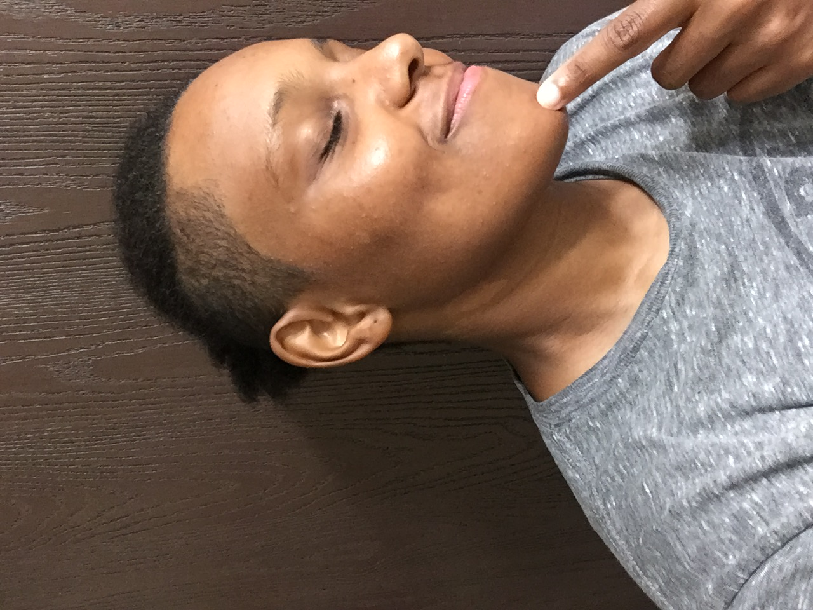

Diary of a Doodler

My name is D. I'm a writer and visual artist, I also code sometimes. I create to explore, learn and decompress. I think art doesn't have to be taken so seriously, it can just be fun. When I make something, the aim is to entertain, to delight; at times, it is to impress upon the receiver an emotion, a sense of a concept or the nature of a relationship.
I'm aiming to translate a feeling and not necessarily the concrete thing. This keeps my work fluid enough to be made complete by the experiences of the receiver and gives the work a long horizon for continued transformation beyond what was originally intended.
Anyway, have fun scrolling and enjoy these works!
Portrait of a 6God, DM (7/30/22).
Warrior King, DM (7/11/22).
Scientific Process, DM (7/08/22).

Dragon, DM (7/01/22).
Untitled, DM (6/20/22).
Untitled, DM (5/21/22).
Beautiful, DM (5/01/22).
Summer, DM (7/13/21).
Untitled, DM (7/02/21).
Lauryn Hill, DM (6/12/21).
Tears, DM (1/25/21).
Timeless, DM (1/19/21).
Drowning, DM (1/19/21).